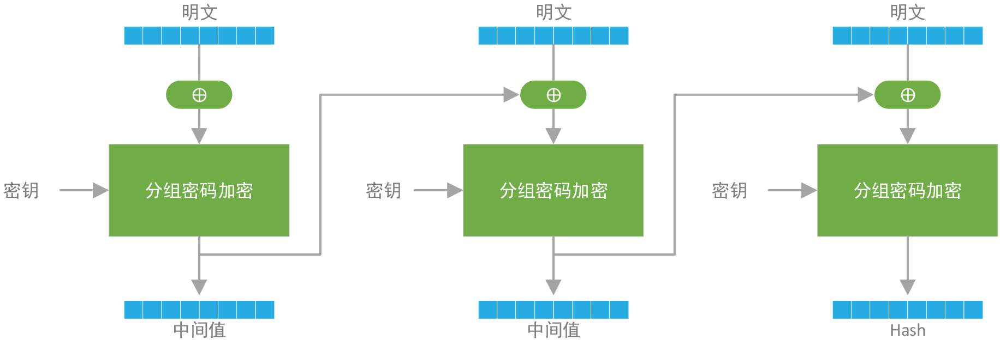

本实验支持自定义明文进行AES-CBC-MAC Hash运算，且支持两种方式：PC端Hash和智能卡端Hash。
对于PC端，本实验支持消息长度可变的Hash运算，必须为16字节整数倍，且可显示Hash过程中关键步骤的中间值；对于智能卡端，本实验支持密钥和消息长度在
以下为本实验的重要提示：
下面我们对AES-CBC-MAC示例卡的APDU指令进行说明，AES-CBC-MAC示例卡的Command APDU如下：
CLA |
INS |
P1 |
P2 |
Lc/Le |
Data |
功能 |
00 |
11 |
02 |
00 |
10+10的倍数 |
10字节密钥+10整数倍字节消息 |
进行Hash运算 |
00 |
C0 |
00 |
00 |
10 |
读取Hash结果 |
注：上表中的数字均为16进制表示。
Response APDU的SW1、SW2我们定义如下：
SW1 |
SW2 |
状态 |
90 |
00 |
成功 |
61 |
xx |
有 “xx” 字节数据可读取 |
6E |
00 |
CLA错误 |
6D |
00 |
INS错误 |
6B |
00 |
P1或P2错误 |
67 |
00 |
Lc或Le错误 |
我们对卡内的指令进行说明，用Key表示密钥，用Message表示待Hash消息，令：
Key=
Message=
那么我们要发送的完整APDU指令顺序为：
1）设置智能卡AES-CBC-MAC算法密钥
当加密状态正常时，会返回
2）读取Hash值
学员可切换至“Smart Card”页面，尝试与智能卡发送指令以进行学习。此处需要注意，当插入我们配套的读卡器后，右侧交互栏的读卡器列表将有一项值为“ACS ACR1281 1S Dual Reader ICC 0”的元素，选择该项，然后在“Smart Card”页面的“Command (Hex)”文本框内输入命令，并点击“Send”按钮，即可发送APDU指令给智能卡。智能卡的返回数据将显示在“Receive (Hex)”文本框内。
CBC-MAC是最为广泛使用的消息认证算法之一，同时它也是一个ANSI标准（X9.17）。CBC-MAC实际上就是对消息使用CBC模式进行加密，取密文的最后一块作为认证码。
当取AES作为加密的分组密码时，称为基于AES的CBC-MAC。

图1 CBC-MAC流程图